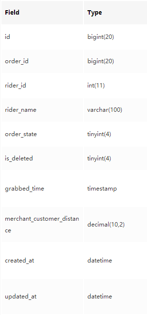

mysql查询
自增主键。一个听起来很吓人的名字，但实际含义很简单。“自增”的意思是，每次在这张数据表中创建一条新记录的时候，数据库都会在上一个id值的基础上自动加上一个固定的步长(默认就是+1)作为新记录的id值。而所谓“主键”，就是能够在一张数据表中唯一标识一条记录的字段，因为每条记录的id都不一样，所以它是主键。这个字段可以是为了单纯的标识数据的唯一性，也可以具有一些业务含义，比如这里的id就同时也是骑手的账号id；
基本查询
SELECT 列名(或者*，表示所有列) **FROM** 表名 **WHERE** 筛选条件;
IN 操作
SELECT name, real_name_certify_state, level, level_city FROM tb_rider WHERE id IN(2, 4, 7);
SELECT name, real_name_certify_state, level, level_city FROM tb_rider WHERE name IN(“Banner”, “Thor”, “Coulson”);
关系运算符：AND 和 OR（不同条件也可以连接）
SELECT * FROM tb_rider WHERE created_at >= “2017-02-01 00:00:00” AND created_at < “2017-06-01 00:00:00” AND level = 3;
排序：ORDER BY
SELECT order_id, created_at FROM tb_order WHERE rider_id = 1 AND grabbed_time >= “2017-12-30 00:00:00” AND grabbed_time < “2017-12-31 00:00:00” AND order_state = 40 ORDER BY created_at DESC;
DESC是**“递减”**的意思，与之对应的是ASC递增。ORDER BY created_at DESC的含义是，按照(BY)created_at字段值递减(DESC)的顺序对查询结果排序(ORDER)。
查询2017-12-30和2017-12-31两天所有运单的所有信息，并先按照骑手id递增，再按运单状态递减的顺序排序展示
SELECT * FROM tb_order WHERE created_at >= “2017-12-30 00:00:00” AND created_at < “2018-01-01 00:00:00” ORDER BY rider_id ASC, order_state DESC;
聚合函数：COUNT，SUM, AVG
COUNT：对查询结果集合中特定的列进行计数；（单纯计数）
SELECT COUNT(id) FROM tb_order WHERE rider_id = 1 AND order_state = 40 AND created_at >= “2017-12-30 00:00:00” AND created_at < “2017-12-31 00:00:00”;
SELECT COUNT(*) FROM tb_order WHERE rider_id = 1 AND order_state = 40 AND created_at >= “2017-12-30 00:00:00” AND created_at < “2017-12-31 00:00:00”;
COUNT不会自动去重；
COUNT在某一条查询结果中，用来计数的那一列的值为**“空”**时，这条记录不进行计数；
注意这里的“空”指的是，而不是某一列没有展示出任何值就是空。
SUM：对查询结果的某个字段进行求和；
查询Stark这名骑手的累计配送里程：
SELECT SUM(merchant_customer_distance) FROM tb_order WHERE rider_id = 1 AND order_state = 40;
AVG：就是average的意思，对查询结果的某个字段计算平均值；
查询Stark这名骑手的平均配送里程
SELECT AVG(merchant_customer_distance) FROM tb_order WHERE rider_id = 1 AND order_state = 40;
聚合函数的好搭档：HAVING 语法
查询2017-12-30当天每个参与跑单骑手的完成单平均配送距离，并筛选出其中平均配送距离超过1.5km的数据：
SELECT rider_id, rider_name, AVG(merchant_customer_distance) FROM tb_order WHERE order_state = 40 AND created_at >= “2017-12-30 00:00:00” AND created_at < “2017-12-31 00:00:00” GROUP BY rider_id HAVING AVG(merchant_customer_distance) > 1.5;
对查询结果去重：DISTINCT 语法
SELECT COUNT(DISTINCT name) FROM tb_sample_1;
将查询数据分组：GROUP BY 语法
查询2017-12-30当天每个参与跑单的骑手各自的完成单总量；
SELECT rider_id, rider_name, COUNT(order_id) FROM tb_order WHERE order_state = 40 AND created_at >= “2017-12-30 00:00:00” AND created_at < “2017-12-31 00:00:00” GROUP BY rider_id;
查询2017-12-30当天每个参与跑单骑手的完成单平均配送距离；
SELECT rider_id, rider_name, AVG(merchant_customer_distance) FROM tb_order WHERE order_state = 40 AND created_at >= “2017-12-30 00:00:00” AND created_at < “2017-12-31 00:00:00” GROUP BY rider_id;
首先执行的是WHERE条件筛选，然后对筛选出的数据结果根据骑手id进行分组，最后再对每个分组中的数据进行merchant_customer_distance列的求平均值。
SELECT score FROM tb_stu_math_score WHERE id=1;
- 这条Sql语句会被执行，根据主键id找到对应的行，进而获取到这一行、score这列的值；
- 但是我们上面说到，计算机的存储是基于二进制的，所以获取到的score值是类似于00000000000000000000000001100100这样的二进制流；
- 这时候根据tb_stu_math_score表的定义，score这一列被定义为整型，于是将二进制流转化为一个整型数，经过进制转换得到00000000000000000000000001100100对应的整型值为100，于是我们看到的结果就是100。
实际上反过来也非常类似，当我们向这张表中写入数据时，例如写入的score列的值为100。因为存储基于二进制，根据表的定义，score列的类型为整型，于是将值100按照整型转换为对应的二进制流00000000000000000000000001100100，并且写入到库中。
[2] Sql的主要数据类型有哪些？

Sql中常常接触的数据类型主要包括几类。
1 整型
- tinyint：用来表示很小很小的整数，比如常常用它作为is_deleted、is_valid这些字段的字段类型，因为这两个字段表示该条记录是否有效，只存在两个值分别是0和1；
- smallint：比tinyint稍微大一点点的整型，可以表示更大一点的整数，比如200、404、401这样的整数值；
- int：常用的整型，可以用来表示比较大的整数，比如10322(事实上int可以表示的整数范围远远比这个大)；
- bigint：用来表示非常大的整数，比如大多数表的自增id就会使用这个类型，可以表示类似10322903这样非常大的整数(事实上bigint可以表示的整数范围远远比这个要大)；
2 浮点型
- decimal：可以表示非常准确的小数，比如经纬度；
3 字符串类型
- char：固定长度的字符串；
- varchar：可变长度的字符串；
这里固定长度和可变长度指的是数据库中的存储形式，因为这部分的内容其实有些超出了这个教程的范围，我们不过多的解释这里的区别。一般在我们实际的应用中varchar用的更多一些。它们都表示类似于"very glad to meet u, Huohuo!“这样的一串字符，当然也可以是中文"敲开心认识你，火火！"。
4 日期类型
- date：表示一个日期，只包含日期部分，不包含时间，比如当前日期"2018-01-23”；
- datetime：表示一个日期，同时包含日期部分和时间部分，比如当前日期"2018-01-23 03:01:43”；
我们在这里只是简单的介绍了几种Sql中常见的字段类型，并没有很深入的去解释它们的原理、差异以及一些其他的数据类型，咱们不着急去学习那些“高大上”的内容，先理解这些类型的含义。
怎么知道一张表中每一列的类型是什么？
第1种方式是使用DESC 表名命令，例如我们想看一下之前提到的tb_rider表的每一列字段类型，就可以执行命令DESC tb_rider。
第二种方式是使用SHOW CREATE TABLE 表名命令，例如SHOW CREATE TABLE tb_rider。
索引
索引绝对算得上是关系型数据库中最关键同时也是最有难度的话题。即便是经验丰富的研发同学，也经常会踩到索引的坑。不过我们这里介绍索引，只是为了更好的服务于查询，我会尽可能避免牵扯进一些复杂的概念和底层原理。
[1] 什么是索引？
那么到底什么是索引呢？你可以把数据库理解为一本很厚的书(假设有10万页)，书中的内容就是数据库里的数据，那么索引就是书的目录**。** 假设你从来没有阅读过这本书，此刻你想要阅读书的第7章第2小节。如果没有目录，你可能需要翻阅整本书找到你要阅读的内容。但是在有目录的情况下，你就只需要先查一下目录找到对应的页码，然后直接翻到那一页就能看到你想看的内容了。索引也是类似的，首先查询索引找到目标数据的位置，再从特定的位置读取出数据的内容。
如何设计索引，是设计数据库表的时候考虑的关键点之一。索引一般由表中的某一列或者某几列构成，一旦设置某一列为索引，那么之后每次在往表中写入数据的时候，都会更新这一列到索引中去。事实上，索引在技术层面是比较复杂的，涉及到磁盘I/O、B树、优化器(Optimizer)等很多技术概念，不过我们先不去深究这些。
[2] 为什么索引很重要，它有什么用？
索引之所以重要，最主要的原因是能够大大提高查询的速度。上面我们举了书的例子，当这本书的页数足够大的时候(假设有2000万页)，如果没有目录，想要查阅其中的某一章节的内容，那几乎就是天方夜谭了。数据库也是如此，当表中的数据只有几行或者几十行、几百行的时候，有没有索引其实差别不大，但是当表中的数据非常非常多的时候(比如众包的运单表，2000万+ 行)，如果没有索引，要找到某一条目标数据，查询的速度就会非常非常非常的慢。
[3]如何使用索引？
要使用索引非常简单，只需要在WHERE条件中使用到索引列作为查询条件
假设这张数据表中order_id是索引列，那么当我们以order_id作为查询条件时，我们就利用了索引，比如下面这条Sql。
SELECT * FROM tb_order WHERE order_id = 300000201712310007;
类似的使用order_id作为查询条件的Sql也都会利用到索引，看看你是否都理解下面两条Sql语句的含义。
\1. SELECT * FROM tb_order WHERE order_id IN (300000201712310007, 300000201712310006) AND order_state = 40; 2. SELECT order_id, order_state FROM tb_order WHERE order_id >= 300000201712300001 AND order_id <= 300000201712300006 AND order_state = 40;
[4] 索引的类型、如何确定表中的哪些列是索引列？
还记得字段类型一节中提到的DESC 表名和SHOW CREATE TABLE 表名语法吗？前面我们将这两个语法用在了tb_rider表上，这一节让我们看一看tb_order表。
之前我们关注的是Type这一项，这里让我们关注Key这一项。我们看到有些列对应的Key是空的，这就表示这一列(或者叫这个字段)不是索引列(或者叫索引字段)。但id、order_id、created_at和updated_at这几列对应的Key均是有值的，这说明这几列都是索引列。但这几列Key的值又各不相同，这是为啥呐？这是以内索引也分为不同的类型，让我们逐个来解释一下。
- PRI：是primary的缩写，标记这一列为主键，主键的概念我们在一开始的时候有介绍过，就是用来唯一标识表中每一行数据的索引；
- UNI: 是unique的缩写，顾名思义就是唯一的意思, 被设置为UNI KEY的列，不允许出现重复的值，如果尝试向表中插入这一列的值完全相同的两行数据，则会引发报错。我猜你肯定会觉得疑惑，那UNI KEY和PRI KEY有啥区别？首先是这两种类型的索引在实现上是有区别的(这一点咱们不深究，涉及到了数据库底层对索引的实现)，其次PRI KEY更多的是数据库层面的语义，仅仅是描述数据的唯一性，而UNI KEY则更多是业务层面的语义，比如说这里的order_id字段，因为业务上不能存在两个运单号完全相同的运单，所以需要把order_id这一列设置为UNI KEY；
- MUL：是multiple的缩写，表示这一列是被设置为一个普通索引。之所以叫做multiple，是因为此时可能这一列单独作为索引，也可能这一列和其他标记为MUL的列共同构成了一个索引(这种由多列共同构成的索引被叫作复合索引)；
现在我们还处在Sql以及数据库知识(是的，除了Sql，我还偷偷介绍了一些数据库原理)学习的初级阶段，所以让我们知道这写差异，但是不着急去把这些搞得一清二楚，它们都是索引，只要合理使用，都可以帮助我们加快Sql查询的效率。
另一种识别表中索引列的方法就是通过SHOW CREATE TABLE 表名命令，比如SHOW CREATE TABLE tb_order，我们得到下面的结果。
CREATE TABLE tb_order ( id bigint(20) NOT NULL AUTO_INCREMENT COMMENT ‘对外不提供，内部使用’, order_id bigint(20) NOT NULL DEFAULT ‘0’ COMMENT ‘运单的跟踪号（可以对外提供）', rider_id int(11) NOT NULL DEFAULT ‘0’ COMMENT ‘配送员id’, rider_name varchar(100) NOT NULL DEFAULT '’ COMMENT ‘配送员名字’, order_state tinyint(4) NOT NULL DEFAULT ‘0’ COMMENT ‘配送状态’, is_deleted tinyint(4) NOT NULL DEFAULT ‘0’, grabbed_time timestamp NOT NULL DEFAULT CURRENT_TIMESTAMP COMMENT ‘抢单时间’, merchant_customer_distance decimal(10,2) NOT NULL DEFAULT ‘0.00’ COMMENT ‘商铺到顾客步行距离’, created_at datetime NOT NULL DEFAULT CURRENT_TIMESTAMP, updated_at datetime NOT NULL DEFAULT CURRENT_TIMESTAMP ON UPDATE CURRENT_TIMESTAMP, PRIMARY KEY (id), UNIQUE KEY uk_order_id (order_id), KEY ix_created_at (created_at), KEY ix_updated_at (updated_at) ) ENGINE=InnoDB AUTO_INCREMENT=14 DEFAULT CHARSET=utf8 COMMENT='配送单’;
看到末尾几行的PRIMARY KEY、UNIQUE KEY和KEY了吗，它们就对应于DESC tb_order结果中的PRI、UNI和MUL，分别标识主键索引、唯一索引和普通索引。每一行括号内的字段就表示对应的索引列。
JOIN语法家族
CREATE TABLE tb_grab_order_limit ( id BIGINT(20) NOT NULL AUTO_INCREMENT COMMENT ‘自增主键’, rider_id BIGINT(20) NOT NULL DEFAULT 0 COMMENT ‘骑手id’, order_grab_limit INT(11) NOT NULL DEFAULT ‘0’ COMMENT ‘接单上限’, is_deleted TINYINT NOT NULL DEFAULT 0 COMMENT ‘该记录是否被删除’, created_at DATETIME NOT NULL DEFAULT CURRENT_TIMESTAMP COMMENT ‘创建时间’, updated_at DATETIME NOT NULL DEFAULT CURRENT_TIMESTAMP ON UPDATE CURRENT_TIMESTAMP COMMENT ‘更新时间’, PRIMARY KEY(id), KEY ix_rider_id (rider_id), KEY ix_created_at (created_at), KEY ix_updated_at (updated_at) ) ENGINE = InnoDB DEFAULT CHARSET=utf8 comment="自定义骑手接单上限表”;
[1] 从LEFT JOIN开始
以这两张表为基础，设想一个场景：假设要查询tb_rider表中所有骑手对应的自定义接单上限。我们的Sql应该怎么写呢？
**思路1：**先查出tb_rider表中所有骑手id，再根据这些骑手id作为查询条件，通过前面学习过的IN语法从tb_grab_order_limit表中查询出所对应的自定义接单上限的记录。
SELECT id FROM tb_rider;
和
SELECT rider_id, order_grab_limit FROM tb_grab_order_limit WHERE rider_id IN (1, 2, 3, 4, 5, 6, 7, 8);
思路1显然是个Bad idea。但是思路1诠释了解决这个查询问题的基本要点。
- 我们最终想要的数据是需要结合tb_rider和tb_grab_order_limit两张表共同得出的；
- 关联这两张数据表的条件是骑手id；
- 因为查询的要求是：tb_rider表中所有骑手，因此应该以tb_rider表中的骑手id作为查询参考集合；
- 不是所有tb_rider表中的骑手都配置了自定义接单上限，思路1的查询方案存在一个缺点，就是我们需要根据查询结果，在逻辑上做一个转换得知哪些骑手没有配置自定义接单上限( 不在返回结果中的骑手)；
**思路2：**基于这几个要点我们可以使用LEFT JOIN语法，下面是对应的Sql语句。
SELECT tb_rider.id, tb_grab_order_limit.order_grab_limit FROM tb_rider LEFT JOIN tb_grab_order_limit ON tb_rider.id = tb_grab_order_limit.rider_id;
这里先介绍一下JOIN语法的基本结构：表1 (INNER/LEFT/RIGHT/FULL) JOIN 表2 ON 表1.列1 = 表2.列2。JOIN关键字前后连接的是两张需要关联查询的数据表，ON关键字后面跟着关联的条件。一共有四种类型的JOIN，他们分别是INNER JOIN、LEFT JOIN、RIGHT JOIN和FULL JOIN。以例子中的LEFT JOIN为例，表1 LEFT JOIN 表2 ON 表1.列1 = 表2.列2的含义是，遍历表1中的列1的值，如果表2中列2的值有和它相等的则展示对应的记录，如果没有表2.列2和表1.列1相等，则展示为null。
思路2的例子中，tb_rider LEFT JOIN tb_grab_order_limit ON tb_rider.id = tb_grab_order_limit.rider_id的含义是，遍历tb_rider表中id这一列(tb_rider表的id字段业务含义就是骑手id)的值，寻找tb_grab_order_limit表中rider_id列的值和它相等的记录，如果不存在则是null。
我们还看到SELECT语句的内容和我们之前使用的很类似，但又稍微有点不一样，都是表名.列名的书写形式。其实这主要是指明了字段所属的表，因为JOIN的两张数据表中可能存在的相同名称的列，例如tb_rider表和tb_grab_order_limit表都有id字段，但含义截然不同，这样写更加明确。
[2] LEFT JOIN的姊妹篇：RIGHT JOIN
前面我们知道LEFT JOIN是以连接的左侧表作为查询的结果集的依据，RIGHT JOIN则是以连接的右侧表作为依据。让我们考虑另一个场景：假设想要查询所有设置了自定义接单上限的骑手姓名。应该如何写这个Sql呢？
先在聪明的大脑里思考几分钟。此时你需要类比LEFT JOIN，需要理解上一段内容讲述的LEFT JOIN知识点，可能需要回到上一段再看一看示例Sql语句以及对应的结果。没关系，一开始学习的时候慢慢来。
答案是这样的。
SELECT tb_grab_order_limit.rider_id, tb_rider.name FROM tb_rider RIGHT JOIN tb_grab_order_limit ON tb_rider.id = tb_grab_order_limit.rider_id;
**RIGHT JOIN是以连接的右侧表为依据，**而tb_grab_order_limit中的骑手id=(1, 2, 4, 6, 10)，其中骑手id为10的骑手在tb_rider表中是没有的，所以name为null。
[3] 一丝不苟的INNER JOIN
之所以叫“一丝不苟”的INNER JOIN，是因为INNER JOIN是非常严格的关联查询，换句话说，必须是根据JOIN条件两张表中存在匹配记录的才作为结果集返回。
SELECT tb_rider.id, tb_grab_order_limit.order_grab_limit FROM tb_rider INNER JOIN tb_grab_order_limit ON tb_rider.id = tb_grab_order_limit.rider_id;
这是因为INNER JOIN会遍历连接一侧的表，根据ON后的连接条件，和连接另一侧的表进行比较，只有两张表中存在匹配的记录才会作为结果集返回。例如这里，它会遍历tb_rider表中id字段的值，并且去tb_grab_order_limit表中寻找rider_id与之匹配的记录，如果找到则作为结果返回。
[4] 心大的FULL JOIN
FULL JOIN其实并不在乎匹配与否，而是将连接的两张表中所有的行都返回，如果有匹配的则返回匹配的结果，如果没有匹配则哪张表中缺失则对应的将当前这条记录标记为null。
[5]交集UNION
- UNION连接两条SELECT语句，作用是将两个SELECT语句的查询结果取交集；
- 第2条SELECT语句中的WHERE tb_rider.id IS null 是为了对存在匹配的数据记录去重(否则UNION之后会有重复的结果)；
- WHERE语句是在RIGHT JOIN之后，UNION之前执行的；
SELECT tb_rider.id, tb_rider.name, tb_grab_order_limit.rider_id, tb_grab_order_limit.order_grab_limit FROM tb_rider LEFT JOIN tb_grab_order_limit ON tb_rider.id = tb_grab_order_limit.rider_id UNION SELECT tb_rider.id, tb_rider.name, tb_grab_order_limit.rider_id, tb_grab_order_limit.rider_id FROM tb_rider RIGHT JOIN tb_grab_order_limit ON tb_rider.id = tb_grab_order_limit.rider_id WHERE tb_rider.id IS null;
从上面的讲解我们了解到JOIN的四种用法，总结一下。
- INNER JOIN关键字在两张表中都有匹配的值的时候返回匹配的行；
- LEFT JOIN关键字从左表返回所有的行，即使在右表中没有匹配的行；
- RIGHT JOIN关键字从右表返回所有的行，即使在左表中没有匹配的行；
- FULL JOIN关键字从左表和右表那里返回所有行，即使右表的行在左表中没有匹配或者左表的行在右表中没有匹配，这些行也会返回。
嵌套的SELECT语法
再来看一下讲述LEFT JOIN的开始，我们提到的那个例子：查询tb_rider表中所有骑手对应的自定义接单上限。当时我们首先提出了思路1，是分为2个步骤的。
SELECT id FROM tb_rider;
和
SELECT rider_id, order_grab_limit FROM tb_grab_order_limit WHERE rider_id IN (1, 2, 3, 4, 5, 6, 7, 8);
我们说这个思路不好，这是显然的，因为在现实场景中往往数据集合都很大(例如这里的rider_id在现实中可能是成百上千甚至成千上万个)，思路本身没有问题但无法操作执行。所以在4.3节我们选择通过JOIN语法来实现同样的查询。那是不是思路1就真的只能是个纸上谈兵的思路了呢？当然不是啦！我们还可以使用嵌套的SELECT语句，就像这样。
SELECT rider_id, order_grab_limit FROM tb_grab_order_limit WHERE rider_id IN (SELECT id FROM tb_rider);
这个写法非常好理解，WHERE rider_id IN (SELECT id FROM tb_rider)首先执行括号中的语句SELECT id FROM tb_rider，然后执行IN筛选，就是我们的思路1描述的那样。于是得到下面的结果。